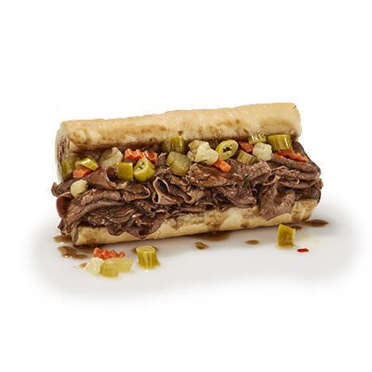

Beef & Sausage Sandwiches

- Italian Beef Sandwich
Our famous, homemade, Italian beef is slow-roasted for four hours, thinly sliced, and served on freshly baked Turano French bread. There are many ways to order an Italian beef sandwich. The standard sandwich is served by splashing a bit of our flavorful, secretly-spiced gravy on it. Some like their sandwich “dipped,” which means we dip the whole sandwich in our gravy. You can also order it “dry,” with very little gravy. Why do we call it gravy? Because it’s actual gravy, just like grandma used to serve: We use the beef’s natural gravy that comes off of it while roasting for four hours. Our Italian beef sandwiches taste best topped with our homemade, oven-roasted sweet peppers or hot giardiniera peppers.
- Big Beef Sandwich
50% bigger than our regular beef sandwich, served on perfectly baked French bread.
- Italian Beef & Sausage Combo
This power couple consists of one char-grilled, flavorful Italian pork sausage topped with our homemade, slow-roasted Italian beef on freshly baked Turano French bread. Top it with our homemade, oven-roasted sweet peppers or hot giardiniera peppers for a powerful flavor combination!
- Big Beef Combo
50% bigger than our regular combo sandwich: A char-grilled sausage and Chicago's #1 beef served together on perfectly baked French bread.
- Char-Grilled Italian Sausage Sandwich
Our char-grilled, flavorful Italian pork sausage recipe has been around for over a decade. It was made just for Portillo’s using secret spices, and it tastes best topped with our homemade, oven-roasted sweet peppers or hot giardiniera peppers. Served on freshly baked Turano French bread.
- Beef-n-Cheddar Croissant
A combination of our famous Italian beef layered with cheddar cheese and served on a toasted croissant.
- Classic Beef Bowl
Italian Beef in a bowl with options to top with Mozzarella or Cheddar cheese and your choice of sweet or hot peppers. Cheese and peppers are an additional charge.
- Chicago Combo Bowl
Italian Beef & Italian Sausage with options to top with Mozzarella or Cheddar cheese and your choice of sweet or hot peppers. Cheese and peppers are an additional charge.
- Italiano Bowl
Italian Beef topped with options to top with Mozzarella or Cheddar cheese and your choice of sweet or hot peppers, served alongside a Meatball topped with Marinara and Parmesan Cheese. Cheese and peppers are an additional charge.
The Homepage
Menu